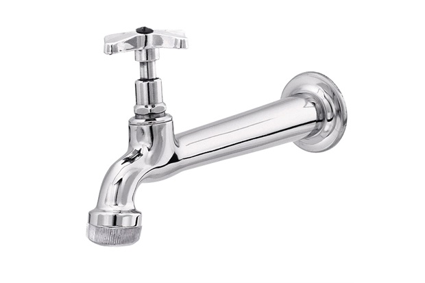
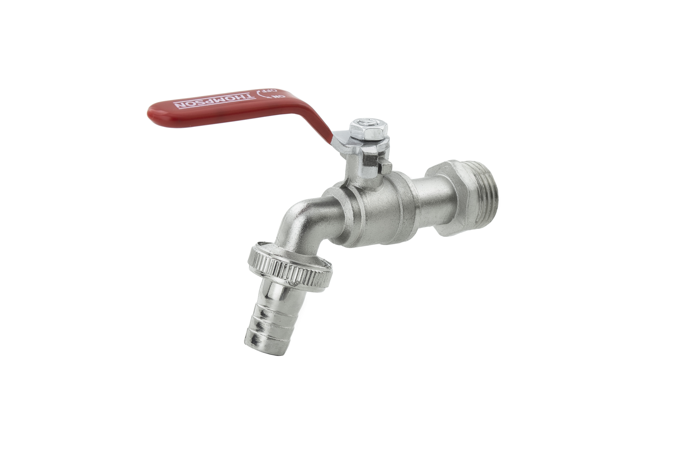
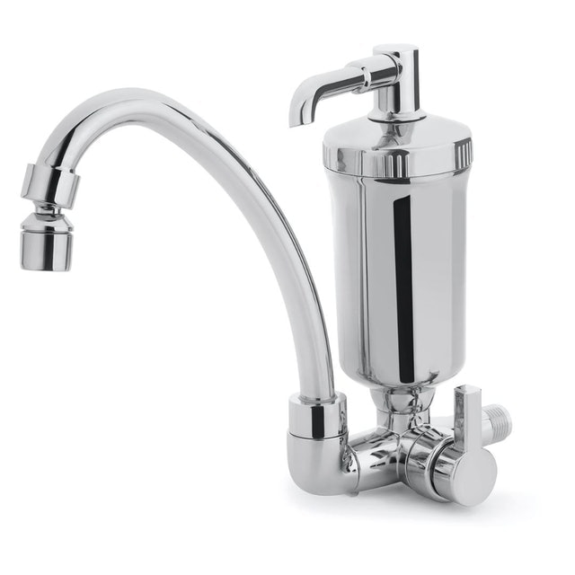
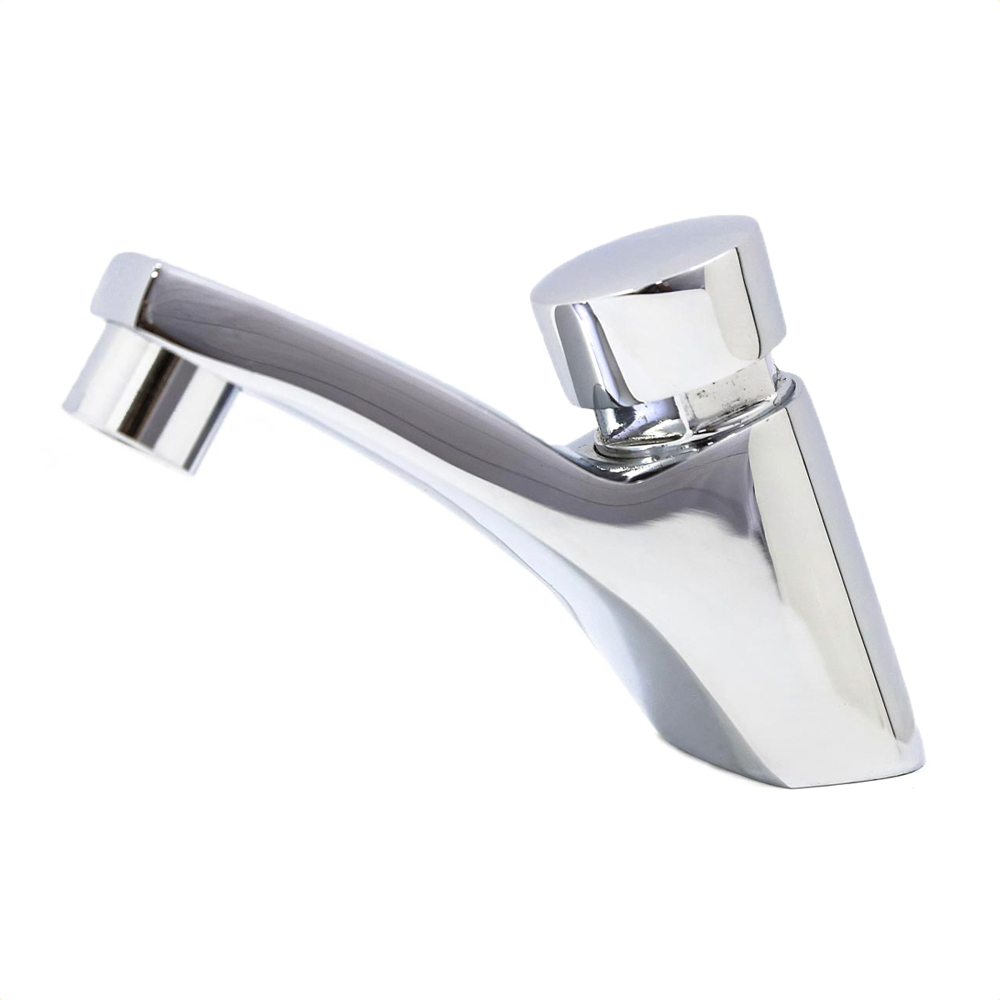
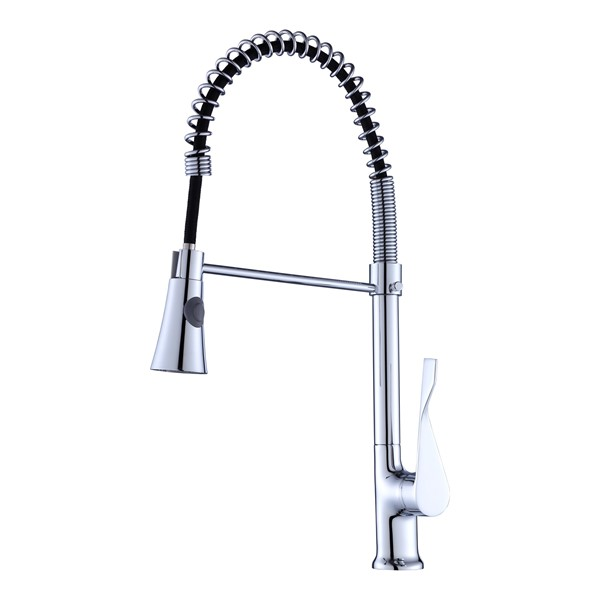

TOP 5 TORNEIRAS
5º lugar
Em quinto lugar temos a torneira tradicional que temos presente em todas as casas, com um nivel de preção mediano, porem é possivel adaotar diversos acessorios para completar a sua funcionalidade.

4º lugar
Em quarto lugar temos a famosa torneira de quintal ou a torneira de obra, ela é optada para esses recintos pois vem equipada com um bico que se encaixa perfeitamente com qualquer tipo de mangueira, tem a taxa de pressão extremamente alto, a agua sai como um jato.

3º lugar
Em terceiro lugar temos a torneira de vó, mais conhecida por vir acoplada com simplismente um filtro muito foda, que purifica a agua antes mesmo da sair, a taxa de pressão da agua, é baixa, porem por conta da purificação e o up na saude ela veio parar no terceiro lugar.

2º lugar
Em segundo lugar temos a torneira de shopping, simplismente incrível, com o botãozinho com o tempo certo pra lavar a mão, evitando o desperdicio de agua, a agua sai numa pressão exata, com uma espuminha muito chique, sensacional.

1º lugar
em primeirissímo lugar, temos ela, a famosa, a aclamada, a desejada, TORNEIRA DE RICO QUE MEXE, simplismente a torneira mais versatil de todas, ja que pode ir pra todo lado, otímo pra lavar a louça, porem exite de mera cuadjuvante pois rico não lava louça, mas tem uma aparencia simplismente sofisticada e perfeita
